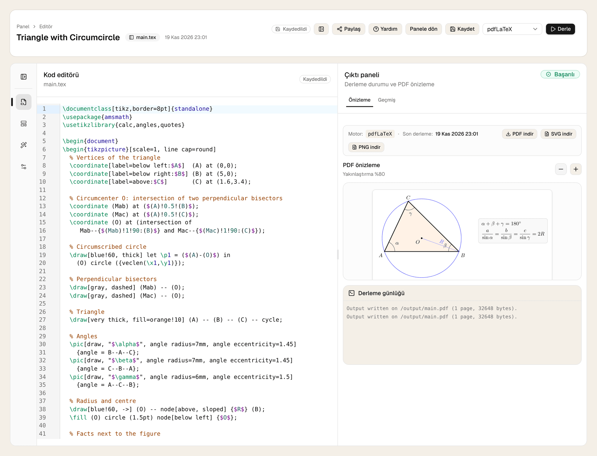
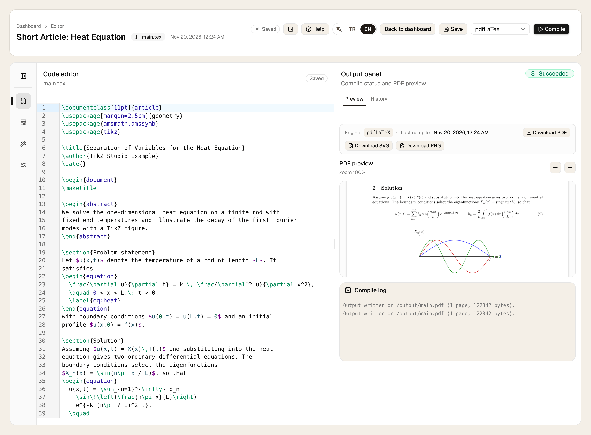
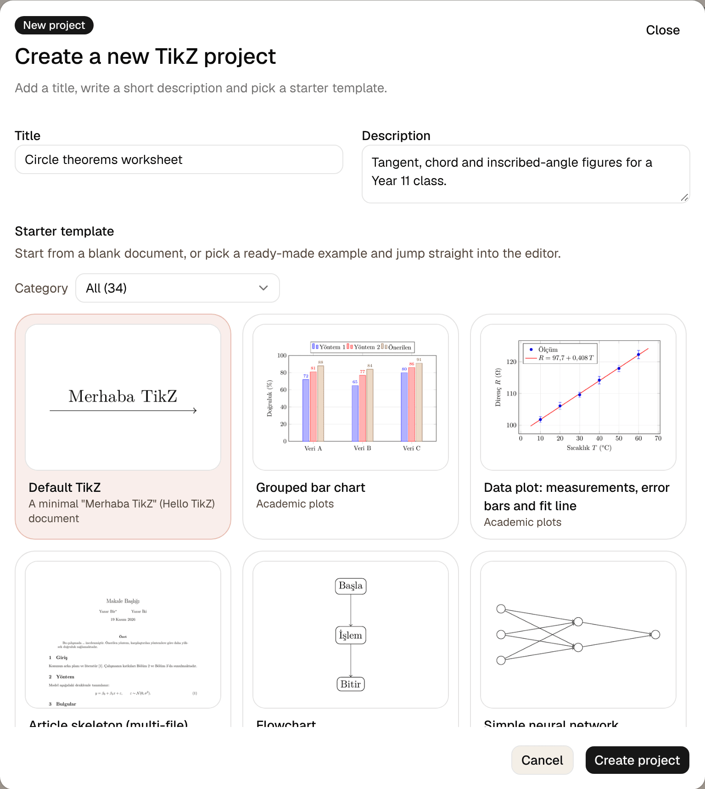
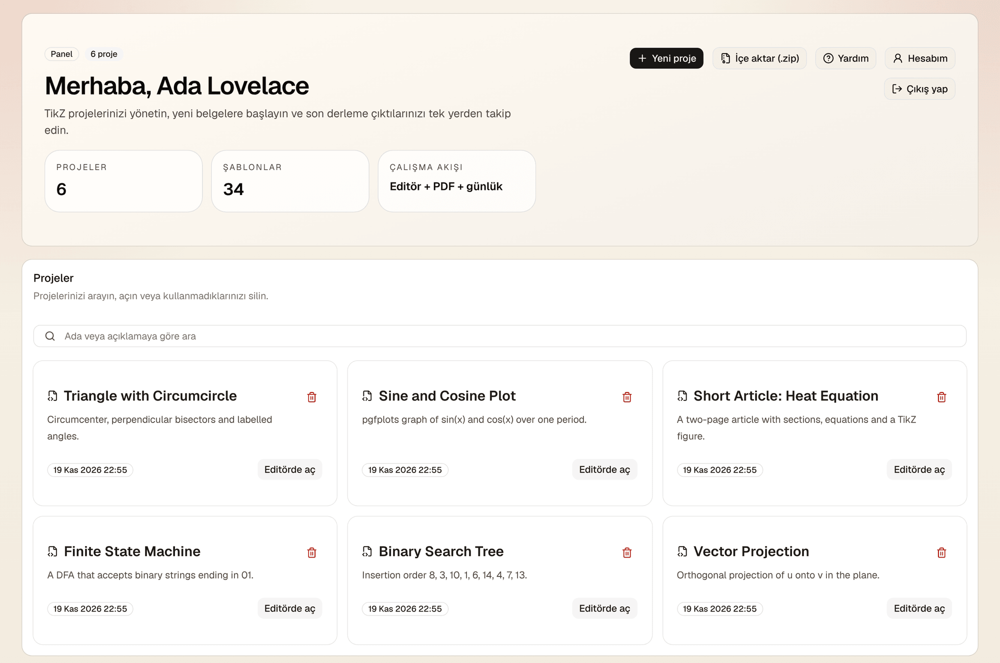
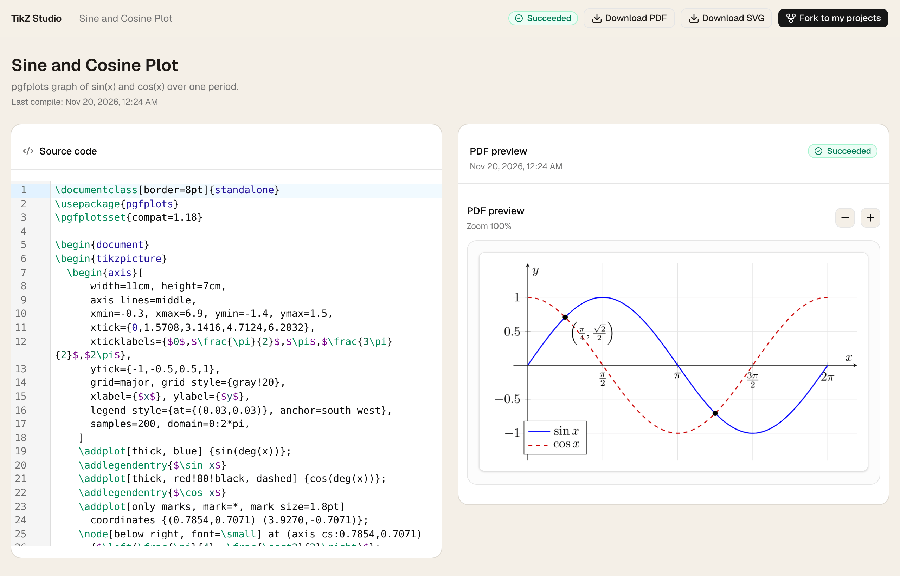
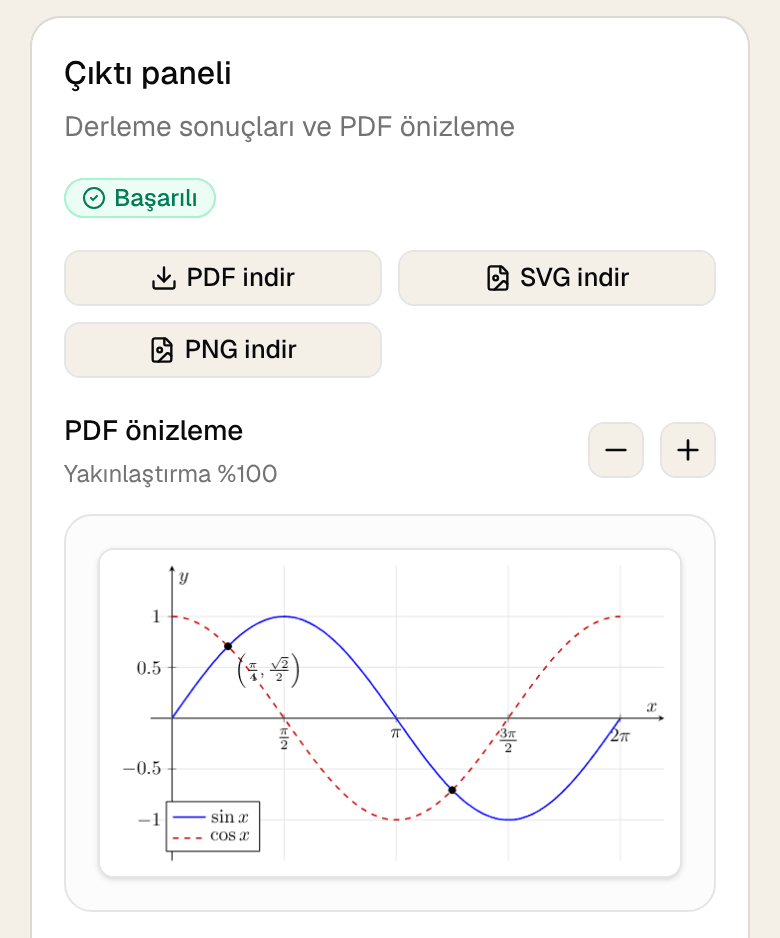

Editor with live PDF preview
A CodeMirror editor with LaTeX highlighting sits next to a PDF.js preview with zoom. Files save automatically about a second after you stop typing.
Online TikZ & LaTeX editor
TikZ Studio puts a code editor and a live PDF preview side by side in your browser. Every compile runs in an isolated TeX sandbox with a choice of five engines, so you get the same result on any computer, tablet or school lab machine.
Sign up with email to save projects. The interface is available in English and Turkish; your documents can be in any language.

Features
From a single diagram to a multi-file article, the whole loop of writing, compiling and exporting happens in one tab.
A CodeMirror editor with LaTeX highlighting sits next to a PDF.js preview with zoom. Files save automatically about a second after you stop typing.
Compile with Tectonic, pdfLaTeX, XeLaTeX, LuaLaTeX or pdfLaTeX + Biber. Each job runs in a locked-down container with no network access and strict time and memory limits.
The compile log highlights the lines that matter: errors, line numbers and warnings. When an error has a line number, the editor marks that line.
Download the PDF, a sanitised SVG or a 300 DPI PNG of the first page, ready for slides, worksheets or the web. Compile history lets you fetch earlier outputs too.
Start from a previewed template: a guided first TikZ drawing, basic shapes and flowcharts, high-school geometry and function graphs, pgfplots charts, tikz-cd, automata, Beamer and an article skeleton.
Insert common TikZ blocks such as axes, nodes and arrows from a panel or by typing a short trigger after a backslash. Add your own snippets and personal templates.
Split a document with \input, upload images, fonts,
.sty and .cls files, and choose the main
file. Import an Overleaf project as a ZIP or export any project.
Make a project public to get a read-only link. Visitors see the source without signing in, and can copy the whole project into their own account with one click.
A built-in help center covers engines, outputs, templates and common errors, and a short onboarding tour introduces each part of the screen on your first visit.
Screenshots
Real screenshots of the running app in its English interface, with English example projects.





Who it's for
Learn TikZ without installing a TeX distribution. Templates cover triangles, circles, line and parabola graphs, the unit circle, number lines, Venn diagrams and probability trees.
Plot data with pgfplots, draw vectors and 3D surfaces, typeset commutative diagrams with tikz-cd, and sketch automata and block diagrams for assignments and theses.
Prepare worksheets and an A–E multiple-choice exam sheet from a template, export print-ready PNGs, and share a starter project that each student copies into their own account.
Work on multi-file articles and Beamer slides, manage references with biblatex and Biber, and bring existing Overleaf projects in and out as ZIP files.
Self-hosting
TikZ Studio is a Next.js app backed by PostgreSQL, with compiles handled by a Docker image that bundles Tectonic and TeX Live. The repository includes a Docker Compose setup for local use and a Coolify deployment using prebuilt images.
The source is public for transparency but is not released under an open-source licence. Please contact the author before deploying it.
# Local setup with Docker Compose
cp .env.example .env
# set BETTER_AUTH_SECRET in .env
docker compose build compiler
docker compose up --build -d
# open http://localhost:3000